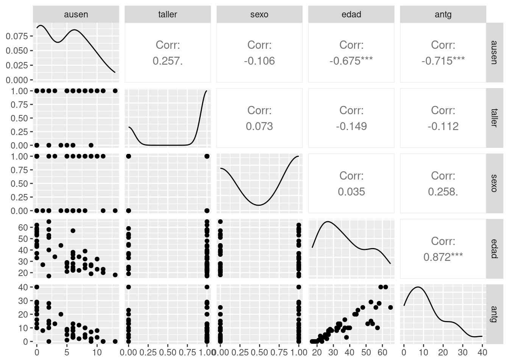

En la regresión lineal múltiple, se busca modelar la relación entre una variable dependiente \(Y\) y dos o más variables independientes \(X_1, X_2, \ldots, X_p\) mediante una ecuación lineal. El modelo de regresión lineal múltiple se define de la siguiente manera:
\[ Y = \beta_0 + \beta_1 X_1 + \beta_2 X_2 + \ldots + \beta_p X_p + u \]
Donde:
El objetivo de la regresión lineal múltiple es encontrar los valores de los coeficientes \(\beta_0, \beta_1, \ldots, \beta_p\) que minimizan la suma de los cuadrados de los residuos (diferencias entre los valores observados de \(Y\) y los valores predichos por el modelo). Una vez estimados los coeficientes, el modelo puede utilizarse para predecir los valores de \(Y\) para nuevas observaciones de las variables independientes.
Los supuestos del modelo de regresión lineal múltiple son similares a los del modelo de regresión lineal simple, pero se extienden para abordar múltiples variables independientes. Estos supuestos son fundamentales para garantizar la validez de las inferencias realizadas a partir del modelo. Los principales supuestos son los siguientes:
Cumplir con estos supuestos es crucial para obtener estimaciones precisas y confiables de los coeficientes del modelo, así como para realizar inferencias válidas sobre la relación entre las variables. En caso de que alguno de los supuestos no se cumpla, se deben considerar técnicas alternativas o realizar ajustes al modelo.
Una empresa desea estimar el ausentismo de sus empleados a su trabajo, medido como el numero de dias que un empleado falta a su trabajo durante un año.
Para ello recogió la siguiente información
library(paqueteDEG)
data("ausentismo")
head(ausentismo)# A tibble: 6 × 7
id ausen taller sexo edad antg sala
<dbl> <dbl> <dbl> <dbl> <dbl> <dbl> <dbl>
1 1 10 1 1 32 8 900
2 2 13 1 0 18 0 750
3 3 2 0 0 53 15 1480
4 4 0 0 1 37 16 1780
5 5 9 0 1 19 0 1030
6 6 4 0 0 44 20 1000# install.packages("GGally")
library(GGally)Registered S3 method overwritten by 'GGally':
method from
+.gg ggplot2ggpairs(ausentismo[,2:6])
# Estimar el modelo de regresión lineal múltiple
modelo1 <- lm(ausen ~ taller + sexo + edad + antg + sala, data = ausentismo)
# Mostrar un resumen del modelo
summary(modelo1)
Call:
lm(formula = ausen ~ taller + sexo + edad + antg + sala, data = ausentismo)
Residuals:
Min 1Q Median 3Q Max
-7.0713 -0.5383 0.3031 0.9391 3.5793
Coefficients:
Estimate Std. Error t value Pr(>|t|)
(Intercept) 12.4436075 1.6404323 7.586 2.14e-09 ***
taller 0.9684600 0.6688242 1.448 0.15504
sexo 2.0492914 0.7122235 2.877 0.00628 **
edad -0.0372111 0.0469913 -0.792 0.43288
antg -0.1507700 0.0652833 -2.309 0.02590 *
sala -0.0044288 0.0007348 -6.027 3.63e-07 ***
---
Signif. codes: 0 '***' 0.001 '**' 0.01 '*' 0.05 '.' 0.1 ' ' 1
Residual standard error: 1.964 on 42 degrees of freedom
Multiple R-squared: 0.7597, Adjusted R-squared: 0.7311
F-statistic: 26.56 on 5 and 42 DF, p-value: 5.282e-12# Estimar el modelo de regresión lineal múltiple
modelo2 <- lm(ausen ~ sexo + antg + sala, data = ausentismo)
# Mostrar un resumen del modelo
summary(modelo2)
Call:
lm(formula = ausen ~ sexo + antg + sala, data = ausentismo)
Residuals:
Min 1Q Median 3Q Max
-6.8757 -0.9888 0.2701 1.3332 4.0126
Coefficients:
Estimate Std. Error t value Pr(>|t|)
(Intercept) 12.4172771 0.9559277 12.990 < 2e-16 ***
sexo 2.4035082 0.6618691 3.631 0.000732 ***
antg -0.2000174 0.0314808 -6.354 1.02e-07 ***
sala -0.0045732 0.0007366 -6.208 1.67e-07 ***
---
Signif. codes: 0 '***' 0.001 '**' 0.01 '*' 0.05 '.' 0.1 ' ' 1
Residual standard error: 1.983 on 44 degrees of freedom
Multiple R-squared: 0.7432, Adjusted R-squared: 0.7257
F-statistic: 42.44 on 3 and 44 DF, p-value: 4.805e-13u= modelo2$residuals
summary(u) Min. 1st Qu. Median Mean 3rd Qu. Max.
-6.8757 -0.9888 0.2701 0.0000 1.3332 4.0126 shapiro.test(u)
Shapiro-Wilk normality test
data: u
W = 0.92696, p-value = 0.005279# install.packages("lmtest")
library(lmtest)
gqtest(modelo1)
Goldfeld-Quandt test
data: modelo1
GQ = 0.44476, df1 = 18, df2 = 18, p-value = 0.9528
alternative hypothesis: variance increases from segment 1 to 2dwtest(modelo1)
Durbin-Watson test
data: modelo1
DW = 1.9755, p-value = 0.4383
alternative hypothesis: true autocorrelation is greater than 0